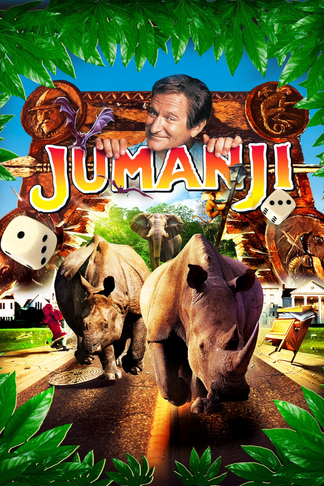

Мировая премьера: 15 декабря 1995
Слоган: Эта игра заставит вас поверить в чудеса.
Сюжет: Случайно обнаружив настольную игру со странным названием "Джуманджи", Алан Пэрриш, не зная о её сверхъестественных свойствах, на глазах изумлённой подружки Сары переносится в джунгли. Долгие годы он находится в потустороннем мире, до тех пор, пока Джуди и Питер, два ни о чём не подозревающих подростка, не находят игру и не снимают волшебные чары, освобождая его из 26-летнего плена. Повзрослевший Алан вновь встречается с Сарой, и теперь им всем вместе предстоит решить нелёгкую задачу – победить могущественную силу игры!
Режиссёр: Джо Джонстон
В основе: Рассказ Криса ван Олсбурга "Джуманджи" (США, 1981)
Серия: Джуманджи
В ролях: Робин Уильямс, Кирстен Данст, Бонни Хант
| Робин Уильямс | Алан Пэрриш |
| Кирстен Данст | Джуди Шеперд |
| Бонни Хант | Сара Уиттл |
| Джонатан Хайд | Сэм Пэрриш / Ван Пелт |
| Дэвид Алан Грир | Карл Бентли |
| Адам Хэнн-Бёрд | Юный Алан |
| Брэдли Пирс | Питер Шеперд |
| Биби Ньювирт | Нора Шеперд |
| Лора Белл Банди | Юная Сара |
| Джеймс Хэнди | Дезинсектор |
| Патришия Кларксон | Кэрол Пэрриш |
Бюджет: $ 50 млн.
Кассовые сборы в США: $ 100 млн.
Кассовые сборы в мире: $ 263 млн.
Продолжительность: 1 ч. 38 мин.
Рейтинг: 7.1